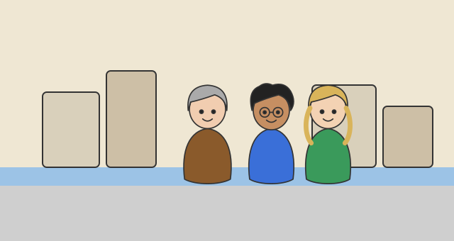
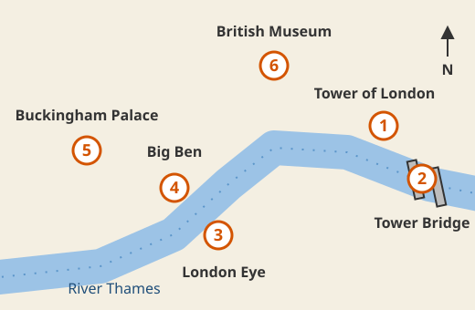

Sehenswürdigkeiten in London
Mit einem KI-Tutor lernen
Ein KI-Tutor erklärt dir diese Seite und hilft dir bei den Aufgaben. Wähl deinen Assistenten:
Mit Claude öffnen Mit ChatGPT öffnen Mit Mistral Vibe öffnen
Du nutzt dein eigenes Konto beim Anbieter. Der Assistent ist kein Angebot von lernapps.net: lernapps liefert nur Inhalte und Aufgaben. Die Wahl gilt für alle Seiten, nur auf diesem Gerät.
Der Stadtrundgang

Von links: Mr Hill (graue Haare), Amir (Brille, schwarze Locken) und Sophie (blonde Zöpfe).
Quelle: eigene Zeichnung. Lizenz: CC-BY-4.0.Heute macht die Klasse einen Stadtrundgang. Mr Hill hat eine Schemakarte von London dabei: eine einfache Karte, die nicht genau nach Maßstab ist. Sechs Halte sind nummeriert. Peter ist heute nicht dabei, deshalb schreibt Sophie ihm später eine Postkarte. Mr Hill sagt: „We walk along the River Thames.“
Aufgabe
Lösung
ein Fluss richtige Antwort
river heißt Fluss. Die Themse fließt durch London.
eine Straße
Straße heißt street oder road. river ist ein Fluss.
ein Park
Park heißt park. river ist ein Fluss mit Wasser.
River heißt Fluss. Mr Hill sagt, dass die Klasse am Fluss entlang geht.
Mehr dazu: Lernlandkarte Englisch · Sehenswürdigkeiten in London
Das kannst du danach: Du nennst wichtige Orte in London und beschreibst sie in einfachen Sätzen: Was ist es, wo liegt es und was kannst du dort tun?
Sechs Halte an der Karte

Schemakarte, nicht genau nach Maßstab. Norden ist oben, Osten rechts. Die Themse fließt von West nach Ost.
Quelle: eigene Zeichnung. Lizenz: CC-BY-4.0.Der Tower of London ist eine Burg am Nordufer der Themse. Die Tower Bridge ist eine Brücke über die Themse, gleich beim Tower. Sie wurde von 1886 bis 1894 gebaut. Das London Eye ist ein Riesenrad am Südufer. Big Ben gehört zum Parlament: eine große Glocke (bell) mit einer Uhr (clock). Der Buckingham Palace ist der Amtssitz des Königs oder der Königin in London. Das British Museum liegt im Stadtteil Bloomsbury und wurde 1753 gegründet.
Merke
So beschreibst du einen Ort: It is a … sagt, was es ist. It has … sagt, was es hat. You can … sagt, was du dort tun kannst. Vor einem Vokal-Laut steht an: an old church, aber a big church. Ein Ort direkt am Fluss liegt on the river, in der Nähe heißt near. Zum Beispiel: It is a big school in a park. It has a nice garden. You can play football there.
| Ausdruck | Bedeutung |
|---|---|
| bridge | Brücke |
| big wheel | Riesenrad |
| tower | Turm |
| castle | Burg |
| palace | Palast |
| Thames | Themse (Fluss in London) |
Übung
Aufgabe
Lösung
Richtige Antwort: It is a bridge with two towers. – Tower Bridge; It is a big wheel on the river. – London Eye; It is a museum in Bloomsbury. – British Museum; It has a very big bell. – Big Ben
Die Brücke mit den zwei Türmen ist die Tower Bridge. Das Riesenrad ist das London Eye. Das Museum in Bloomsbury ist das British Museum. Die große Glocke gehört zu Big Ben.
Mehr dazu: Lernlandkarte Englisch · Sehenswürdigkeiten in London
Aufgabe
Auf dieser Karte stehen nur Nummern. Wähle den richtigen Ort.

Schemakarte, nicht genau nach Maßstab. Norden ist oben, Osten rechts.
Quelle: eigene Zeichnung. Lizenz: CC-BY-4.0.Tipp
Schau, ob der Halt nördlich oder südlich der Themse liegt und ob er im Osten oder Westen ist.
- Halt 1 liegt im Osten, nördlich der Themse. → Stop one is ….
- Halt 3 liegt südlich der Themse. → Stop three is ….
- Halt 6 liegt ganz im Norden, weit weg vom Fluss. → Stop six is ….
Lösung
- Stop one is the Tower of London.
- Stop three is the London Eye.
- Stop six is the British Museum.
Aufgabe
Lösung
Big Ben ist der Spitzname der großen Glocke, im weiteren Sinn auch des Uhrturms. richtige Antwort
Big Ben nennt man die Glocke. Viele nennen so auch den ganzen Turm, aber das ist nur ein Spitzname.
Big Ben ist der offizielle Name des ganzen Turms.
Der Turm hat einen anderen Namen, Elizabeth Tower. Big Ben ist der Spitzname der Glocke.
Big Ben ist eine Brücke über die Themse.
Eine Brücke heißt bridge. Big Ben ist eine Glocke und ein Spitzname.
Big Ben ist der Spitzname der großen Glocke und, im weiteren Sinn, des Uhrturms. Der Turm selbst heißt heute Elizabeth Tower.
Mehr dazu: Lernlandkarte Englisch · Sehenswürdigkeiten in London
Aufgabe
Lösung
Richtige Antwort: 1. It, 2. is, 3. a, 4. bridge, 5. over, 6. the, 7. River, 8. Thames
Zuerst kommt It is a, dann das Nomen bridge und zuletzt der Ort over the River Thames.
Mehr dazu: Lernlandkarte Englisch · Sehenswürdigkeiten in London
Aufgabe
Wähle das richtige Wort.
Tipp
Prüfe den ersten Laut des nächsten Worts für a und an. Für den Ort denke an near und on.
- Das ist ein altes Museum. → It is … old museum.
- Es ist ein großer Palast. → It is … big palace.
- Die Brücke ist in der Nähe der Burg. → The bridge is … the castle.
- Die Burg liegt direkt am Fluss. → The castle is … the River Thames.
Lösung
- It is an old museum.
- It is a big palace.
- The bridge is near the castle.
- The castle is on the River Thames.
Aufgabe
Schreibe die Sätze auf Englisch.
Tipp
Beginne mit It is, It has oder You can. Nach can steht kein to.
- Das ist ein Museum in London.
- Es hat eine große Uhr.
- Du kannst dort Bilder sehen.
Lösung
- It is a museum in London. (auch richtig: This is a museum in London.)
- It has a big clock. (auch richtig: It has got a big clock.)
- You can see pictures there.
Aufgabe
Hör zu und schreibe, was du hörst.
- KI
- KI
- KI
Lösung
- Mr Hill has a map of London.
- The class walks along the river.
- Sophie takes a photo of the palace.
Selbst sagen und schreiben
Aufgabe
Hör zu, sprich nach und nimm dich auf. Vergleiche dann mit dem Original.
Tipp
Hör den Satz zuerst. Sprich dann langsam nach und achte auf famous, Bridge und museum.
- Big Ben is a famous bell in London.KI
- Many visitors take photos of the bridges.KI
- Amir likes the British Museum.KI
Zum Aufnehmen braucht diese Aufgabe JavaScript. Die Beispiele kannst du auch ohne anhören.
Lösung
- Big Ben is a famous bell in London.
- Many visitors take photos of the bridges.
- Amir likes the British Museum.
Offene Aufgabe
Sophie schreibt Peter eine Postkarte aus London. Schreibe zwei Sätze über einen Ort, den die Klasse gesehen hat.
Eine gute Antwort enthält:
Lösung
This is Tower Bridge. It is a famous bridge near the Tower of London.
Weiter durch London
In der Mittagspause setzen sich die Kinder in einen Park. Dort erzählen sie von ihren Familien, und Mr Hill fragt die Kinder danach. Wie du von den Menschen in Großbritannien erzählst, erfährst du auf der nächsten Seite.